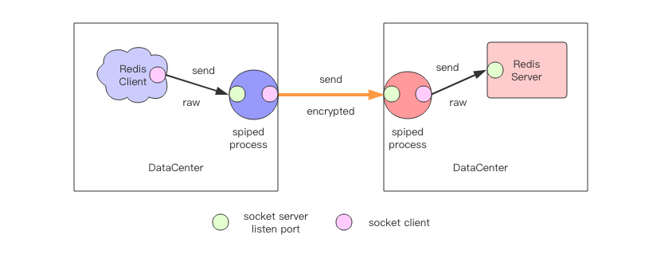

保护 Redis #
指令安全 #
Redis 有一些非常危险的指令。比如 keys 指令会导致 Redis 卡顿，flushdb 和 flushall 会让 Redis 的所有数据全部清空。
如何避免人为操作失误导致这些灾难性的后果也是运维人员特别需要注意的风险点之一。
Redis 在配置文件中提供了 rename-command 指令用于将某些危险的指令修改成特别的名称，用来避免人为误操作。比如在配置文
件的 security 块增加下面的内容:
rename-command keys abckeysabc
如果还想执行 keys 方法，需要键入 abckeysabc。如果想完全封杀某条指令，将指令 rename 成空串，就无法通过任何字符串指令来执行这
条指令了：
rename-command flushall ""
端口安全 #
Redis 默认会监听 *:6379，Redis 的服务地址一旦可以被外网直接访问，黑客可以通过 Redis 执行 Lua 脚本拿到服务器权限。
所以，务必在 Redis 的配置文件中指定监听的 IP 地址。更进一步，还可以增加 Redis 的密码访问限制，客户端必须使用 auth 指令传入正
确的密码才可以访问 Redis，这样即使地址暴露出去了，普通黑客也无法对 Redis 进行任何指令操作。
Lua 脚本安全 #
禁止 Lua 脚本由用户输入的内容 (UGC) 生成，避免黑客利用以植入恶意的攻击代码来得到 Redis 的主机权限。Redis 应该以普通用户的身份启动。
SSL 代理 #
Redis 并不支持 SSL 链接，意味着客户端和服务器之间交互的数据不应该直接暴露在公网上传输，否则会有被窃听的风险。如果必须要用在公网上，可 以考虑使用 SSL 代理。
Redis 官方推荐使用 spiped 工具，可能是因为 spiped 的功能相对比较单一，使用也比较 简单，易于理解。
spiped 原理 #

spiped 会在客户端和服务器各启动一个 spiped 进程。
spiped 进程 A 负责接受来自 Redis Client 发送过来的请求数据，加密后传送到右边的 spiped 进程 B。spiped B 将接收到的数据解密后传 递到 Redis Server。然后 Redis Server 再走一个反向的流程将响应回复给 Redis Client。